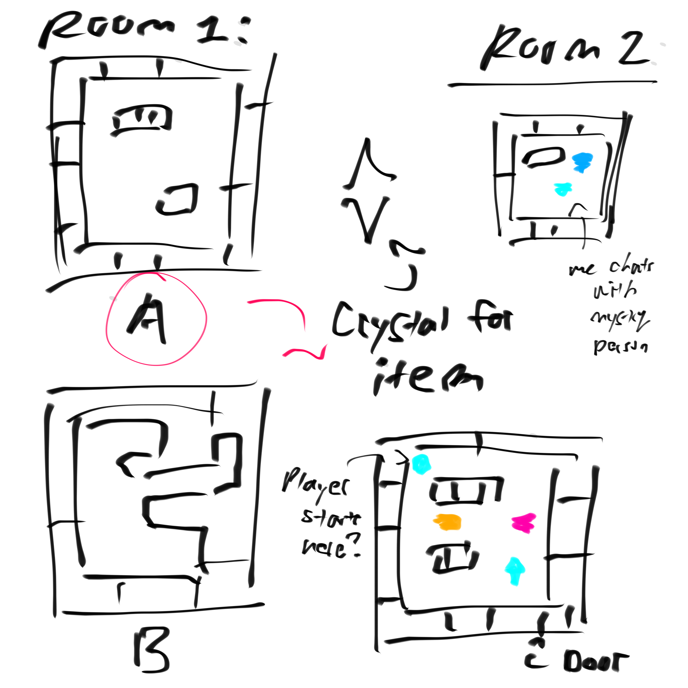
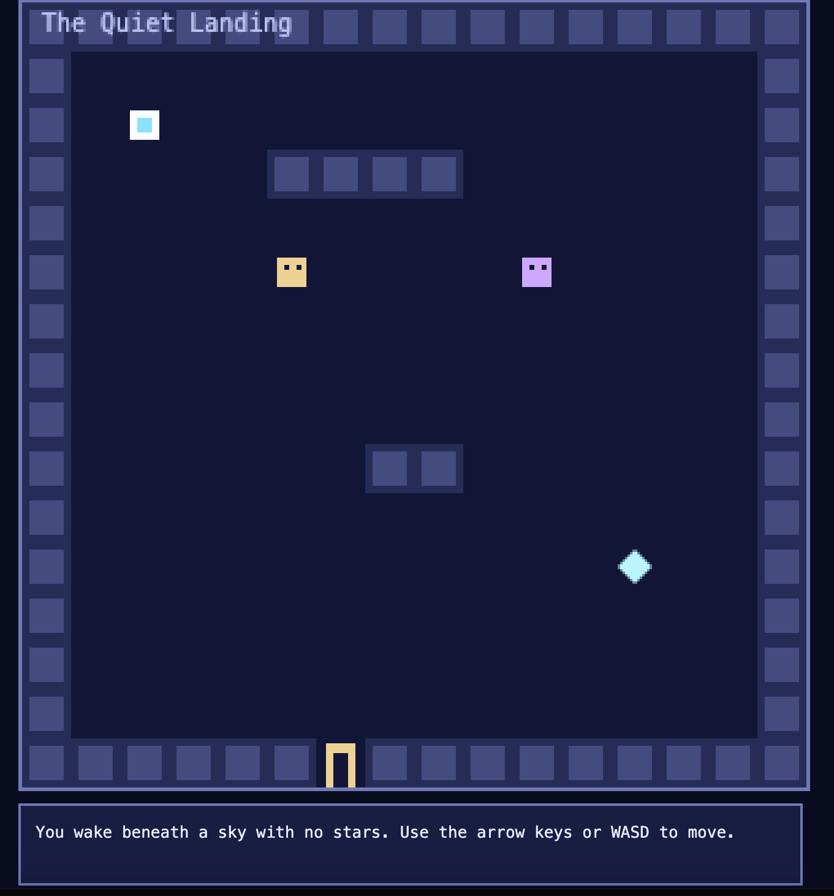

Game Jam Prototype
Foot Family: Play Our Game
Explore our game, inspired by Cece's OCs.
Play the Bitsy GameArtist’s Statement
For this game jam prototype, we wanted to create a short demo game that lets players explore, discover clues, and interact with characters. Instead of going to the traditional route of Sherlock Holmes, we wanted to bring in a unique mystery experience with some OCs one of our group members had. We hope players feel curious about the world and enjoy finding out what happens as they play.
Creative Process
These are some materials from our process, including ideas, sketches, and screenshots from the game.


Reflection
Making this prototype helped bring Cece's OCS into a playable experience. If we had more time, we would add more areas to explore and more interactions for players to discover.